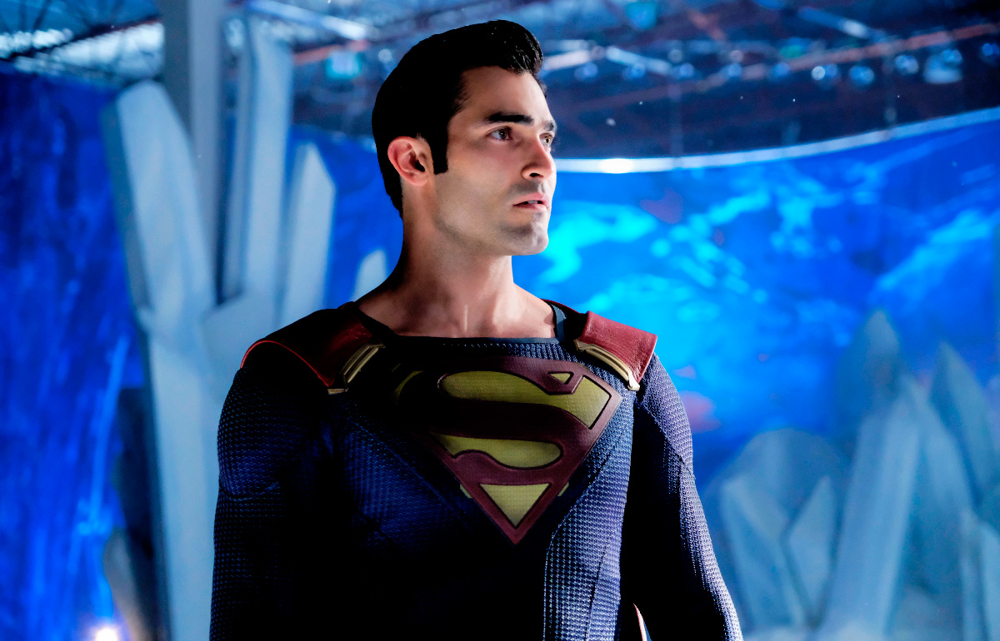

Sinopse
Após anos enfrentando supervilões megalomaníacos, monstros destruidores e invasores alienígenas, o Homem de Aço e a famosa jornalista Lois Lane retornam à idílica cidade de Smallville para criar os filhos adolescentes, Jonathan e Jordan.
Na estreia da série, Superman e Lois retornam a Smallville para enfrentar um de seus maiores desafios: criar dois meninos sendo pais que trabalham.
Disponibilidade

Superman & Lois já conta com duas temporadas e está sendo transmitido pelo canal de TV Warner Channel e no serviço de Streaming HBO Max.
Os novos episódios da série saem aos sábados.
Confira abaixo algumas imagens da série:



Assista Superman & Lois na HBO Max